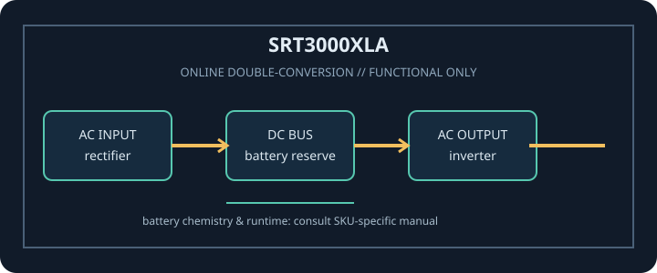

[ ONLINE DOUBLE-CONVERSION UPS // IDENTIFIED MODEL ]
Smart-UPS On-Line SRT3000XLA
APC / Schneider Electric SRT3000XLA: 3000 VA / 2700 W online double-conversion UPS. This record covers only the identified SKU and regional configuration; match complete model code and nameplate to manufacturer documentation.

ARCHIVAL IDENTIFICATION: Record full SKU, region, serial/date code, firmware/revision, installed options, battery identifier and observed condition. Similar product names do not prove electrical compatibility.
Model specifications
| Exact model / topology | APC / Schneider Electric SRT3000XLA; Online double-conversion, sine-wave output; tower/rack-mount model. |
|---|---|
| Rated output | 3000 VA / 2700 W. VA and W limits are separate constraints; never exceed either. |
| Input / output voltage | Input: 120 V nominal, North American model. Output: 120 V nominal; confirm configured output and connected equipment voltage. |
| Input connection | NEMA L5-30P input plug. |
| Output receptacles | 8 × NEMA 5-20R plus 1 × NEMA L5-30R output receptacles. |
| Battery chemistry / service | Internal sealed lead-acid battery pack; compatible external battery packs are supported as documented. Use the exact approved replacement battery and service procedure. |
| Runtime | Schneider Electric/APC model documentation provides runtime charts and external-pack configuration data. Runtime depends on actual watts, battery condition/age, charge, environment and number of compatible packs. |
| Transfer behavior | Online double-conversion output avoids a normal utility-to-inverter transfer delay. Static bypass and fault/overload transfers are conditional; follow the SRT operation manual. |
| Communications / compatibility | USB and serial host communications with SmartSlot for supported management accessories/network cards; confirm exact card, shutdown software and OS compatibility. |
| Compatibility / safety | 120 V, 30 A L5-30P input and mixed 20 A/30 A output receptacles. Ensure the branch circuit, plugs and per-outlet limits match; connect only grounded loads and obey battery/electrical servicing warnings. Read the exact revision of the manufacturer manual before connection, service or battery replacement. |
Service and compatibility notes
- Measure and record connected watts and source voltage; runtime is not guaranteed for an aged or untested battery.
- Do not open energized mains equipment. Never defeat protective earth, overload an outlet, use damaged equipment, or substitute an unapproved battery.
- For hardwired or high-current versions, qualified installation, rated branch protection and local electrical code apply.
- Confirm the complete model suffix, input wiring, output voltage, outlet map and manual revision against the unit nameplate before connecting equipment.
Manufacturer datasheet and manual sources
- APC Smart-UPS On-Line SRT3000XLA manufacturer specificationOfficial Schneider Electric model page with rating, connectors, topology and options.
- APC SRT2200XLA / SRT3000XLA 120 Vac operation manualOfficial model-family manual with installation, operation, battery and safety instructions.